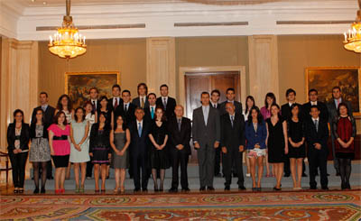

30/05/11 S.A.R. el Príncipe de Asturias recibió a una representación del Real Instituto de Estudios Europeos en su 25 aniversario

S. A. R. el Príncipe de Asturias ha recibido en el Palacio de La Zarzuela a una representación del Real Instituto de Estudios Europeos con motivo de su 25°. aniversario, que coincide con el del ingreso del Reino de España en las Comunidades Europeas.La delegación, encabezada por buena parte de la Junta directiva del Instituto, estaba integrada también por los integrantes de la Promoción Príncipe Felipe (2010-2011) de su XXIII Programa Máster en Unión Europea, que se está desarrollando en Zaragoza, con sesiones intensivas en Bruselas, Fráncfort, Luxemburgo, Estrasburgo y Madrid.
Vea todas las imágenes en la galería multimedia